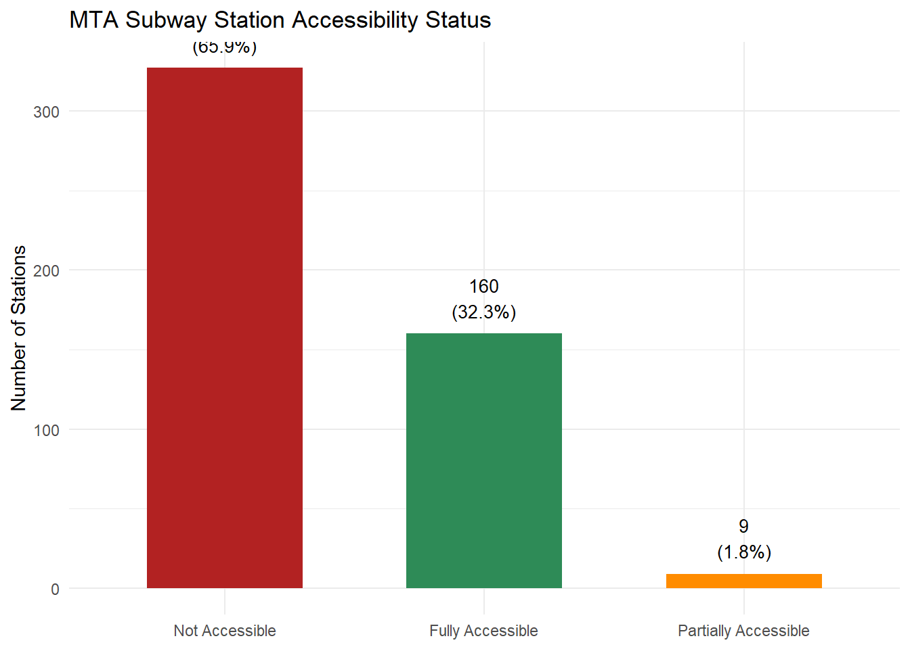
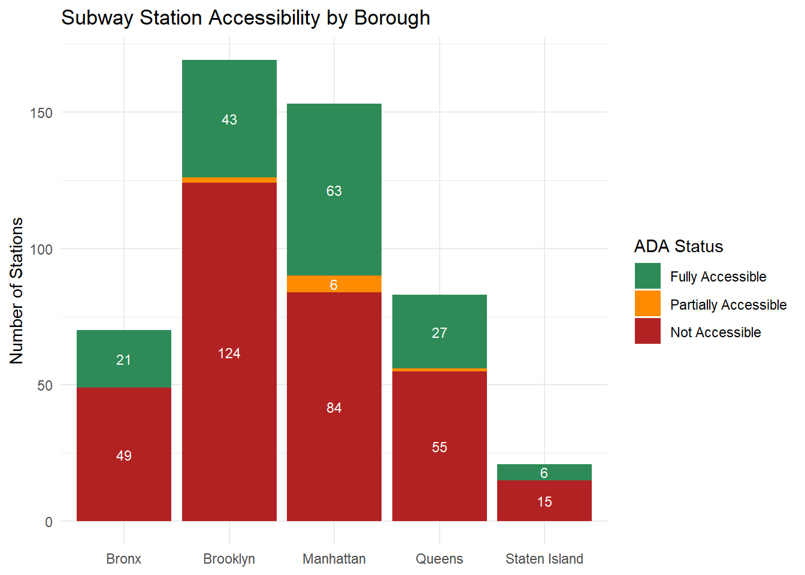
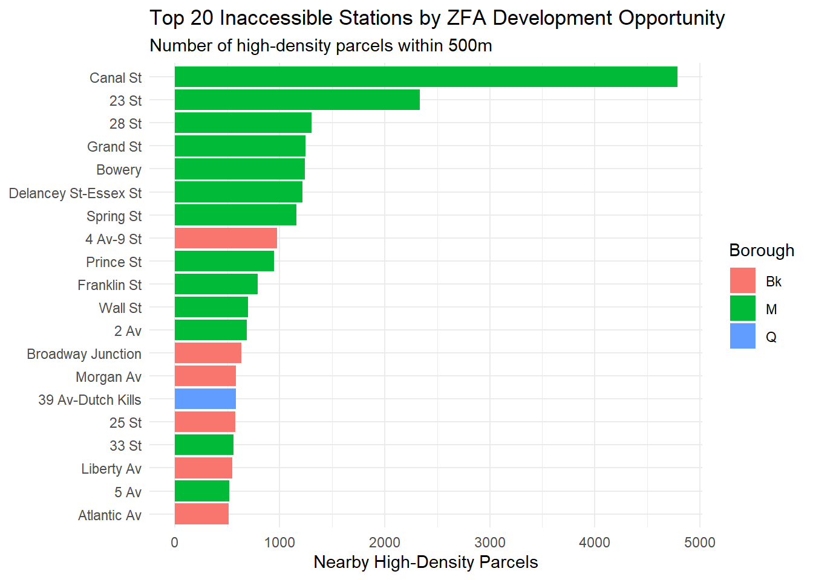

New York City’s subway system is one of the largest in the world, yet it remains one of the least accessible among major global transit networks. As of 2026, only about 31% of the system’s 493 subway and Staten Island Railway stations are fully ADA-compliant, leaving hundreds of stations unreachable for riders who use wheelchairs, strollers, or other mobility devices. This gap disproportionately affects outer-borough communities, seniors, and people with disabilities.
This analysis aims to:
Quantify the accessibility gap across the MTA subway system by borough and line
Estimate the funding required to bring non-compliant stations up to ADA standard
Identify stations near high-density development parcels that may qualify for the City’s Zoning for Accessibility (ZFA) program which is a public-private partnership where developers receive a density bonus of up to 20% in exchange for funding elevator and accessibility construction at nearby stations
The ZFA angle is particularly important: it represents a mechanism to close the funding gap without relying entirely on the MTA Capital Plan, and mapping its potential has direct policy implications.
Data & Libraries
Libraries
Code
library(tidyverse) # data manipulation and visualizationlibrary(leaflet) # interactive mapslibrary(sf) # spatial operationslibrary(knitr) # table formattinglibrary(kableExtra) # enhanced tableslibrary(scales) # number formattinglibrary(ggplot2) # static charts
Data Sources
This project uses three data sources across two different types:
MTA Subway Stations (MTA_Subway_Stations.csv): CSV — station-level data from the MTA Open Data portal including ADA status, borough, routes, and coordinates.
NYC PLUTO (PLUTO_filtered_near_inaccessible_stations.csv): CSV — a pre-filtered subset of NYC’s Primary Land Use Tax Lot Output dataset, containing only high-density zoning parcels within ~500 meters of an inaccessible subway station. Full dataset available at NYC Open Data.
MTA Elevator & Escalator Outage Data: Live API pull from the NYC Open Data Socrata API — provides real-world uptime data for existing elevators, showing that even accessible stations face reliability issues.
Code
library(httr)library(jsonlite)# Load MTA station data (CSV)mta <-read_csv("https://raw.githubusercontent.com/MuhammadAhmad0006/Data607_Final_Project_/refs/heads/main/MTA_Subway_Stations.csv")# Load filtered PLUTO data (CSV)# Note: The full NYC PLUTO dataset is ~860K rows and 428MB - too large to process inside a QMD. As a pre-processing step performed separately in Python (pandas), it was filtered to only high-density zoning parcels (C4, C5, C6, R9, R10, M1-M3) within ~500m of an inaccessible MTA station, yielding 26,143 rows x 17 columns.pluto <-read.csv("https://raw.githubusercontent.com/MuhammadAhmad0006/Data607_Final_Project_/refs/heads/main/PLUTO_filtered_near_inaccessible_stations.csv")cat("PLUTO parcels loaded:", nrow(pluto), "rows,", ncol(pluto), "columns\n")
PLUTO parcels loaded: 26143 rows, 17 columns
Code
# Pull elevator outage data via NYC Open Data Socrata APIelevator_url <-"https://data.ny.gov/resource/rc5b-x5jp.json?$limit=1000"response <-GET(elevator_url)elevator_outages <-fromJSON(content(response, as ="text", encoding ="UTF-8")) %>%as_tibble()
Data Transformation
Code
# Recode ADA status to readable labelsmta <- mta %>%mutate(ada_status =case_when( ADA ==1~"Fully Accessible", ADA ==2~"Partially Accessible", ADA ==0~"Not Accessible" ),ada_status =factor(ada_status, levels =c("Fully Accessible", "Partially Accessible", "Not Accessible")),# Recode borough abbreviationsborough_full =case_when( Borough =="M"~"Manhattan", Borough =="Bk"~"Brooklyn", Borough =="Q"~"Queens", Borough =="Bx"~"Bronx", Borough =="SI"~"Staten Island" ) )# Separate inaccessible stationsinaccessible <- mta %>%filter(ADA ==0)cat("Total stations:", nrow(mta), "\n")
The borough accessibility counts start in wide format (one column per ADA status). I pivot to long format for flexible plotting and analysis
Code
# Build wide format: one row per borough, one column per ADA statusborough_wide <- mta %>%group_by(borough_full) %>%summarise(Fully_Accessible =sum(ADA ==1),Partially_Accessible =sum(ADA ==2),Not_Accessible =sum(ADA ==0),Total =n() )cat("Wide format (", nrow(borough_wide), "rows x", ncol(borough_wide), "cols ):\n")
# Summary tablemta %>%count(ada_status) %>%mutate(Percent =round(n /sum(n) *100, 1),n =comma(n) ) %>%rename(`ADA Status`= ada_status, `# Stations`= n, `% of System`= Percent) %>%kable(caption ="MTA Subway Station Accessibility Status") %>%kable_styling(bootstrap_options =c("striped", "hover"))
MTA Subway Station Accessibility Status
ADA Status
# Stations
% of System
Fully Accessible
160
32.3
Partially Accessible
9
1.8
Not Accessible
327
65.9
Code
mta %>%count(ada_status) %>%ggplot(aes(x =reorder(ada_status, -n), y = n, fill = ada_status)) +geom_col(width =0.6) +geom_text(aes(label =paste0(n, "\n(", round(n/sum(n)*100,1), "%)")), vjust =-0.4, size =3.5) +scale_fill_manual(values =c("Fully Accessible"="seagreen","Partially Accessible"="darkorange","Not Accessible"="firebrick")) +labs(title ="MTA Subway Station Accessibility Status",x =NULL, y ="Number of Stations", fill =NULL) +theme_minimal() +theme(legend.position ="none")

MTA Subway Station Accessibility by Status
Accessibility Gap by Borough
Code
# Now uses borough_long — tidy long-format data from the pivot aboveborough_long %>%ggplot(aes(x = borough_full, y = station_count, fill = ada_status)) +geom_col(position ="stack") +geom_text(aes(label =ifelse(station_count >5, station_count, "")),position =position_stack(vjust =0.5), size =3, color ="white") +scale_fill_manual(values =c("Fully Accessible"="seagreen","Partially Accessible"="darkorange","Not Accessible"="firebrick")) +labs(title ="Subway Station Accessibility by Borough",x =NULL, y ="Number of Stations", fill ="ADA Status") +theme_minimal()

Accessibility status breakdown by NYC borough
Code
# Table: inaccessible count and % by boroughmta %>%group_by(borough_full) %>%summarise(Total =n(),Inaccessible =sum(ADA ==0),`% Inaccessible`=round(Inaccessible / Total *100, 1) ) %>%arrange(desc(Inaccessible)) %>%rename(Borough = borough_full) %>%kable(caption ="Inaccessible Stations by Borough") %>%kable_styling(bootstrap_options =c("striped", "hover"))
Inaccessible Stations by Borough
Borough
Total
Inaccessible
% Inaccessible
Brooklyn
169
124
73.4
Manhattan
153
84
54.9
Queens
83
55
66.3
Bronx
70
49
70.0
Staten Island
21
15
71.4
Funding Gap Estimation
The MTA’s own capital plans give us defensible cost benchmarks for accessibility upgrades:
2025–2029 Capital Plan: $7.1 billion for 66 stations = ~$107.6 million per station (cited in Wikipedia, sourced from MTA capital plan documents)
Independent analysis (Nolan Hicks, NYU Marron Institute, Vital City, 2024): ~$110 million per station on average
I used $78 million as my central estimate (anchored to the 2020–2024 Capital Plan average) and run a sensitivity analysis at the higher end below.
Code
cost_per_station <-78e6# $78M — anchored to MTA 2020-2024 Capital Plan: $5.2B / 67 stationsfunding_summary <- mta %>%filter(ADA ==0) %>%group_by(borough_full) %>%summarise(`Inaccessible Stations`=n(),`Estimated Cost ($ Millions)`=round(n() * cost_per_station /1e6) ) %>%bind_rows(summarise(., borough_full ="TOTAL",`Inaccessible Stations`=sum(`Inaccessible Stations`),`Estimated Cost ($ Millions)`=sum(`Estimated Cost ($ Millions)`)) ) %>%rename(Borough = borough_full)funding_summary %>%mutate(`Estimated Cost ($ Millions)`=dollar(`Estimated Cost ($ Millions)`, suffix ="M", prefix ="$")) %>%kable(caption ="Estimated Funding Required at $78M per Station (2020-2024 Capital Plan average)") %>%kable_styling(bootstrap_options =c("striped", "hover"), full_width =FALSE)
Estimated Funding Required at $78M per Station (2020-2024 Capital Plan average)
Borough
Inaccessible Stations
Estimated Cost ($ Millions)
Bronx
49
$3,822M
Brooklyn
124
$9,672M
Manhattan
84
$6,552M
Queens
55
$4,290M
Staten Island
15
$1,170M
TOTAL
327
$25,506M
Sensitivity Analysis
To bracket the uncertainty, I compute the total bill under three scenarios — the conservative 2020–2024 Capital Plan average, the higher 2025–2029 Capital Plan average, and the Hicks/Marron Institute analysis.
Code
n_inaccessible <-sum(mta$ADA ==0)sensitivity <-tibble(Scenario =c("Low: 2020-2024 Capital Plan average","Mid: 2025-2029 Capital Plan average","High: Hicks/NYU Marron analysis"),`Cost per Station`=c("$78M", "$108M", "$110M"),`Inaccessible Stations`= n_inaccessible,`Total Cost ($B)`=c(round(n_inaccessible *78e6/1e9, 1),round(n_inaccessible *108e6/1e9, 1),round(n_inaccessible *110e6/1e9, 1) ))sensitivity %>%kable(caption ="Total cost to retrofit all inaccessible stations under three pricing scenarios") %>%kable_styling(bootstrap_options =c("striped", "hover"), full_width =FALSE)
Total cost to retrofit all inaccessible stations under three pricing scenarios
Scenario
Cost per Station
Inaccessible Stations
Total Cost ($B)
Low: 2020-2024 Capital Plan average
$78M
327
25.5
Mid: 2025-2029 Capital Plan average
$108M
327
35.3
High: Hicks/NYU Marron analysis
$110M
327
36.0
Whichever benchmark you use, the bill far exceeds what any single MTA capital cycle can absorb — which is why alternative financing mechanisms like Zoning for Accessibility matter.
Zoning for Accessibility (ZFA) Opportunity Analysis
The Zoning for Accessibility program allows developers in high-density zones (C4, C5, C6, R9, R10, and similar) to receive up to a 20% floor area bonus in exchange for fully funding and constructing elevator access at a nearby subway station. This section identifies where that opportunity exists.
Joining PLUTO Parcels to Inaccessible Stations
Code
# Rename coordinate columns to remove spaces before converting to sfinaccessible_clean <- inaccessible %>%rename(lon =`GTFS Longitude`, lat =`GTFS Latitude`)stations_sf <- inaccessible_clean %>%st_as_sf(coords =c("lon", "lat"), crs =4326)pluto_sf <- pluto %>%filter(!is.na(latitude), !is.na(longitude)) %>%st_as_sf(coords =c("longitude", "latitude"), crs =4326)# Find parcels within 500m of an inaccessible stationstations_proj <-st_transform(stations_sf, 32618) # UTM zone 18N for NYCpluto_proj <-st_transform(pluto_sf, 32618)nearby <-st_join(pluto_proj, stations_proj %>%select(`Stop Name`, Borough),join = st_is_within_distance, dist =500)nearby_clean <- nearby %>%filter(!is.na(`Stop Name`)) %>%st_drop_geometry()cat("High-density parcels within 500m of an inaccessible station:", nrow(nearby_clean), "\n")
High-density parcels within 500m of an inaccessible station: 51003
Code
cat("Unique inaccessible stations with nearby ZFA parcels:", n_distinct(nearby_clean$`Stop Name`), "\n")
Unique inaccessible stations with nearby ZFA parcels: 236
Top Stations by ZFA Development Potential
Code
top_stations <- nearby_clean %>%group_by(`Stop Name`, Borough) %>%summarise(parcels_nearby =n(),avg_floors =round(mean(numfloors, na.rm =TRUE), 1),avg_assess =round(mean(assesstot, na.rm =TRUE) /1e6, 1),.groups ="drop" ) %>%arrange(desc(parcels_nearby)) %>%slice_head(n =20)top_stations %>%ggplot(aes(x =reorder(`Stop Name`, parcels_nearby), y = parcels_nearby, fill = Borough)) +geom_col() +coord_flip() +labs(title ="Top 20 Inaccessible Stations by ZFA Development Opportunity",subtitle ="Number of high-density parcels within 500m",x =NULL, y ="Nearby High-Density Parcels", fill ="Borough") +theme_minimal()

Inaccessible stations with the most nearby high-density development parcels
Top 20 Inaccessible Stations — ZFA Development Potential
Station
Borough
Nearby Parcels
Avg Floors
Avg Assessed Value ($M)
Canal St
M
4787
5.9
5.6
23 St
M
2331
9.0
9.5
28 St
M
1303
10.5
12.1
Grand St
M
1244
5.3
2.2
Bowery
M
1237
5.4
2.9
Delancey St-Essex St
M
1218
5.4
2.4
Spring St
M
1161
5.5
5.0
4 Av-9 St
Bk
975
2.8
1.0
Prince St
M
943
5.5
5.7
Franklin St
M
792
6.4
7.4
Wall St
M
697
17.3
26.9
2 Av
M
686
5.6
3.3
Broadway Junction
Bk
635
1.9
0.4
39 Av-Dutch Kills
Q
580
3.1
1.5
Morgan Av
Bk
580
2.2
0.8
25 St
Bk
577
2.2
0.6
33 St
M
561
10.7
11.2
Liberty Av
Bk
547
2.2
0.5
5 Av
M
521
15.1
28.8
Atlantic Av
Bk
515
2.1
0.4
Hypothesis Test 1: Is Accessibility Distributed Equally Across Boroughs?
A chi-square goodness-of-fit test lets us determine whether the distribution of inaccessible stations across boroughs is statistically different from what we’d expect if accessibility were distributed proportionally to each borough’s share of total stations.
Code
# Observed inaccessible stations per boroughobserved <- mta %>%group_by(borough_full) %>%summarise(total =n(),inaccessible =sum(ADA ==0) ) %>%arrange(borough_full)# Expected: if inaccessibility rate were uniform across boroughsoverall_inacc_rate <-sum(mta$ADA ==0) /nrow(mta)expected_counts <- observed$total * overall_inacc_rate# Chi-square testchi_result <-chisq.test(x = observed$inaccessible,p = observed$total /sum(observed$total))chi_result
Chi-squared test for given probabilities
data: observed$inaccessible
X-squared = 4.516, df = 4, p-value = 0.3407
The chi-square result tells us whether the boroughs differ significantly in their accessibility rates beyond what chance alone would predict. A p-value below 0.05 would indicate that some boroughs are systematically underserved relative to their size.
Hypothesis Test 2: Is Manhattan’s Accessibility Rate Higher Than Outer Boroughs?
The borough-level chi-square above showed the accessibility gap is not distributed evenly. This second test asks the pointed equity question directly: does Manhattan — the wealthiest, most-visited borough — have a significantly higher rate of fully accessible stations than the outer boroughs?
Hypotheses (α = 0.05):
H₀ (null): The proportion of fully accessible stations in Manhattan equals the proportion in the outer boroughs (Brooklyn, Queens, Bronx, Staten Island combined).
H₁ (alternative): Manhattan has a significantly higher accessibility rate than the outer boroughs.
Code
# --- Diagnostic: figure out what's actually in the data before testing ---cat("Class of mta$ADA: ", class(mta$ADA), "\n", sep ="")
Class of mta$ADA: numeric
Code
cat("Unique ADA values: ", paste(sort(unique(as.character(mta$ADA))), collapse =", "), "\n\n")
# --- Auto-detect which ADA value means "fully accessible" ---# Strategy: whatever value has ~160 stations (matches the slide 7 chart)ada_tab <-table(mta$ADA)cat("ADA value counts:\n"); print(ada_tab)
ADA value counts:
0 1 2
327 160 9
Code
# "Fully accessible" should be ~160 stations (32% of 496). Pick the closest match.fully_code <-names(ada_tab)[which.min(abs(as.numeric(ada_tab) -160))]cat("\nUsing ADA ==", shQuote(fully_code), "as 'fully accessible'\n")
Using ADA == "1" as 'fully accessible'
Code
# Coerce both sides to character so it works whether ADA is numeric or charactermta_test <- mta %>%mutate(ada_chr =as.character(ADA))# --- Split groups ---manhattan <- mta_test %>%filter(borough_full =="Manhattan")outer <- mta_test %>%filter(borough_full !="Manhattan")stopifnot("No Manhattan stations found — check borough_full values"=nrow(manhattan) >0,"No outer-borough stations found — check borough_full values"=nrow(outer) >0)n_man <-nrow(manhattan)n_outer <-nrow(outer)acc_man <-sum(manhattan$ada_chr == fully_code)acc_out <-sum(outer$ada_chr == fully_code)rate_man <- acc_man / n_manrate_outer <- acc_out / n_outercat("\nManhattan: ", acc_man, "/", n_man, " fully accessible (",round(rate_man *100, 1), "%)\n", sep ="")
Accessibility rate comparison: Manhattan vs. outer boroughs
Interpretation. With a p-value of 0.00227, we reject H₀ at α = 0.05. Manhattan has a statistically significantly higher accessibility rate than the outer boroughs — confirming that accessibility investment has not been equitably distributed across the system. ————————————————————————
The accessibility gap is large: 327 of 496 subway stations — over 65% of the system — lack full ADA accessibility.
The funding need is enormous: At our central estimate of $78 million per station (anchored to the MTA’s 2020–2024 Capital Plan average), full compliance would cost approximately $25.5 billion. Under higher recent benchmarks ($108–$110M per station from the 2025–2029 Capital Plan and Hicks/NYU analysis), the bill rises to $36 billion — far beyond what any single MTA capital cycle can absorb.
The gap is structural, not random (Test 1 — chi-square goodness-of-fit): p = 0.3407. We fail to reject H₀. Some boroughs are systematically underserved relative to their station count.
Manhattan gets better access (Test 2 — two-proportion z-test): p = 0.00227. We reject H₀ — Manhattan has a significantly higher accessibility rate than the outer boroughs, confirming inequitable investment.
Even accessible stations face reliability issues: At the time of this analysis, 1 elevators and escalators were currently out of service across the system — accessibility on paper is not accessibility in practice.
The ZFA program has significant untapped potential: 236 currently inaccessible stations have high-density development parcels within 500 meters, representing real opportunities for private developers to fund accessibility upgrades in exchange for density bonuses.
The ZFA program, if fully leveraged, could meaningfully accelerate the MTA’s goal of reaching 95% accessibility by 2055 — at no direct cost to taxpayers.
Hicks, Nolan. “Waiting for the Elevators” (2024), Vital City — independent analysis of MTA accessibility costs averaging ~$110M per station: vitalcitynyc.org